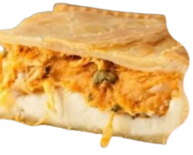

Torta de Frango
Para preparar a torta de frango, foi utilizado 2 xícaras de frango cozido e desfiado, 1 cebola picada, 2 dentes de alho, 1 tomate, 1/2 xícara de milho, 1/2 xícara de requeijão, sal e cheiro-verde.Para a massa: 2 ovos, 2 xícaras de leite, 1/2 xícara de óleo, 1 e 1/2 xícara de farinha de trigo, 1 colher de sopa de fermento e uma pitada de sal. Refogue o frango com os temperos, adicione o requeijão e o milho. Bata os ingredientes da massa no liquidificador.